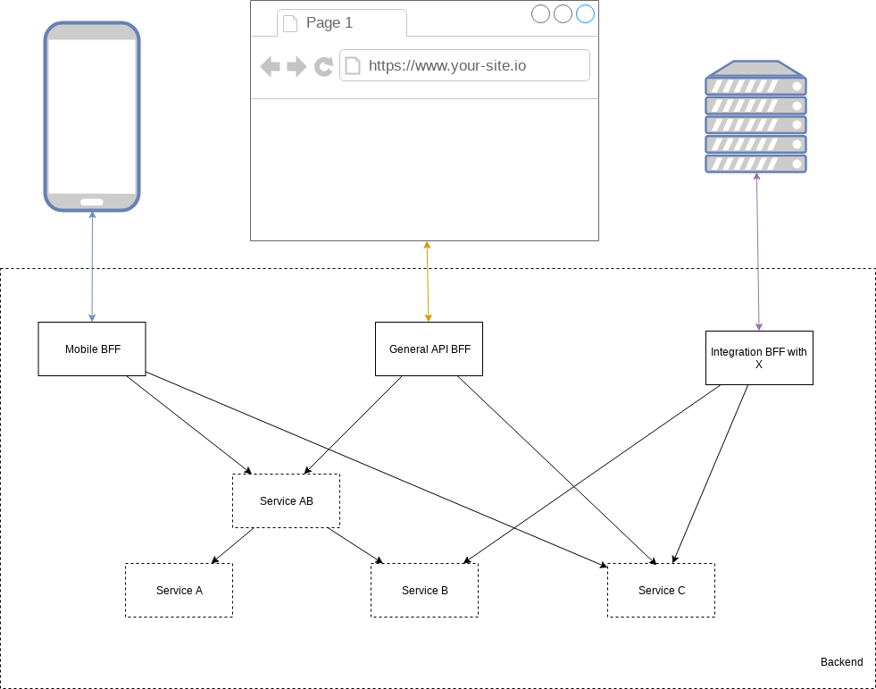

Микросервисный пузырь как будто уже лопнул и все, кто поспешно применял этот взгляд на архитектуру бекенда либо канули в лету, либо многократно пожалели о своем выборе этого тернистого пути. Пожалуй, это связано в первую очередь с бездумным разбиением кода на кучу маленьких тесно-связанных приложений, создания наносервисов и т.п. Всё это происходит из-за недостаточного количества хороших практик? Конечно нет, скорее из-за отсутствия информированности о простейших шаблонах проектирования таких систем. Об одном из таких шаблонов “бекенды для фронтендов” здесь и пойдет речь. Для начала давай разберемся а в чем проблема…
Проблема
Мы делаем софт у которого есть конечные пользователи. В случае разработки бекенда это может быть разношерстный пул клиентов. Это проблема. Клиенты должны с тобой взаимодействовать и для этого ты предоставляешь им API. Здесь довольно очевидные вещи и я не хотел бы останавливаться на них, разбирая термин API и говоря банальные вещи о том, что API должен быть документирован и удобен, не должен ломать совместимость от версии к версии (а лучше, должен версионироваться) и так далее, всё это ясно. А какие бывают клиенты? Вот тебе бытовая классификация потенциальных потребителей твоего апи:
- классический веб фронтенд, написанный типично на js и работающий в браузере пользователя;
- мобильные клиенты, обычные приложения, которые стоят на смартфонах пользователей;
- GraphQL сервер между тобой и фронтендом;
- интеграции с различными сервисами, когда ты определяешь api, которое будут дергать какие-то внутренние системы, которые разрабатываешь не ты;
- внешние системы, например, какой-то другой бекенд, который написал кто-то для создания собственного сервиса, который использует тебя для части задач.
Даже если я кого-то забыл - это не страшно, идея понятна, клиенты гетерогенные. При чем, для одних было бы здорово получать информацию по кусочкам, каждый раз дозапрашивая часть, для других нужно минимизировать количество запросов, т.к. это сажает батарейку, а для третих нужен определенная структура данных, потому что логика обработки запросов на той стороне обязана быть минималистичной. Всё это приводит нас к проблеме того, что нашему сервису нужно обеспечивать логику, которая подойдет одновременно всем клиентам.
Какие есть варианты развития апи? Остановимся на нескольких клиентах, допустим у нас ожидается мобильное приложение, веб фронтенд, парочка внутренних интеграций.
Попытка решения 1
Давайте ничего не будем делать. Как гласят источники - иногда, это лучшее решение. Поставим HTTP API, оформим для единообразия его в стиле REST (об этом была прошлая [статья]()) и вуаля, всем подходит. Так ли это? На практике окажется, что в этом API сликом много данных для мобильных клиентов и вообще им приходится делать дюжину запросов, чтобы собрать полную картину в этом вашем REST. Внутренние интеграции будут недовольны необходимостью слишком много знать про твое API, да и вообще, не понятно как и где будут появляться специфичные для интеграции запросы. Зато веб фронтенду будет в принципе всё круто.
Попытка решения 2
Подумаем, можем ли мы упростить всё и поставить вместо HTTP API - GraphQL API, а уже за ним ничего не делать и снова оформить в REST стиле и попивать чай, наслаждаясь результатом? С первого взгляда создается ощущение, что да, однако, скорее всего окажется, что внутренние интеграции не захотят подобного рода взаимодействие и вообще им бы пару методов дернуть, только вот методы эти специфичные и нужны только им.
Попытка решения 3
Сделать толстый API Gateway, который реализует всю специфичную логику, дает возможность реализовать на нем все виды взаимодейсткий. В теории, такое решение, конечно, даст результат, однако ценой тесного связывания в одном месте большого количества не связанной логики, более того, этот гейтвей будет нагружаться всем чем только можно, что обязательно скажется на производительности решения.
Попытка решения 4
Дадим клиентам доступ напрямую к базе данных! Ладно, это шутка, никогда так не делайте, это как минимум свяжет вас по рукам и ногам.
Решение
О том, что этот шаблон в качестве решения озвученной выше проблемы используют на практике многие компании я узнал из книги Сема Ньюмана “Создание микросервисов”. [Вот здесь]() я написал на неё обзор, ты можешь почитать. Позволь я проиллюстрирую пример:

Конечно, буду рад услышать ваши решения!
На почитать: Сем Ньюман “Создание микросервисов” Backends for Frontends samnewman.io
comments powered by Disqus